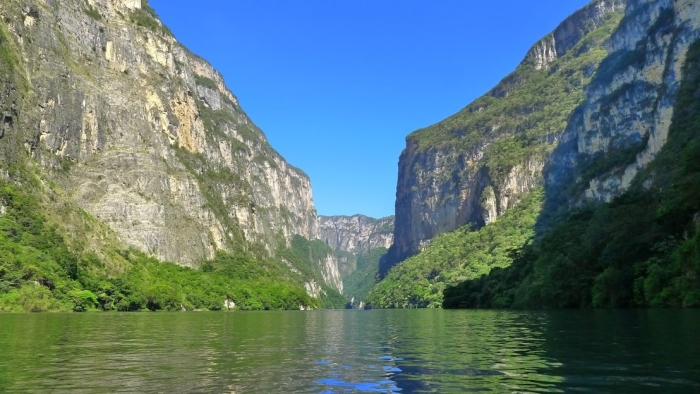

¡ Misión México !
Bonjour à tous !
Nous vous avions quitté il y a presque trois semaines à Phoenix, en Arizona, où nous avons achevé notre road-trip américain pour nous envoler vers México et l’Amérique latine ! Mais avant de vous en dire plus sur notre découverte de ce nouveau pays, revenons quelques instants à nos derniers jours aux Etats-Unis.
Bye bye Kia Sedona
Les quatre jours que nous avions prévu de passer à Phoenix furent en effet plutôt bien remplis. L’enjeu principal pour nous était alors de vendre le carrosse qui nous avait porté sur plus de dix mille kilomètres au plus offrant, non sans une certaine tristesse. Notre première tentative chez un repreneur professionnel nous vaut un devis pour le moins décevant... Le salesman, Mick, pris de sympathie par notre récit, nous invite tout de même à dîner et nous conseille la revente à un particulier. Nous persévérons donc sur Craigslist, et c’est la veille de notre départ que nous sommes soulagés (mais émus…) de vendre la voiture en bonne et due forme à un prix raisonnable. Entre temps, nous retrouvons Sarah, une amie rencontrée dans le Minnesota au cours d’un voyage antérieur, qui nous propose de nous héberger plusieurs jours chez elle, avec cette gentillesse toujours aussi surprenante des personnes du Midwest américain.
Sarah, une amie du Minnesota, nous accueille à Phoenix
Good Bye Arizona !
¡ Hola México !
Le 16 novembre dernier, nous embarquons donc pour México débarrassés de notre matériel de camping, portant Spinoza, sage et enthousiaste, dans sa boîte. Une fois là bas, nous bénéficions une fois de plus de l’hospitalité généreuse d’un de nos camarades de promotion, Guilhem, en stage à Mexico depuis plusieurs mois. C’est l’occasion pour nous de découvrir la Roma, quartier charmant de la ville aux petites maisons cachées par de nombreux arbres. Nous prenons une semaine pour découvrir quelques quartiers de Mexico et passer du temps avec plusieurs amis qui y vivent. Claire et Diane nous font découvrir San Angel et Coyoacan, au sud de la ville, Guilhem nous emmène aux soirées de la Roma, où nous rencontrons quelques étudiants français et mexicains.
L’arrivée à Mexico et aussi pour nous l’occasion de rejoindre MakeSense, incubateur local soutenant des projets d’entrepreneuriat social axés sur les problématiques de gestion de l’eau douce. Après avoir partagé un verre de présentations en leur compagnie, nous sommes conviés à un après-midi de pitch de projets sociaux dans leurs bureaux. Nous entendons alors beaucoup parler des problèmes de pénurie mais aussi de manque de qualité de l’eau douce sur le territoire mexicain, qui entraînent parfois de graves problèmes de santé. Nous fixons de nouvelles rencontres pour le début du mois de décembre, nous vous en dirons beaucoup plus dans notre prochain article dédié à ce sujet.
Rencontre dans les locaux de MakeSense avec des entrepreneurs sociaux travaillant à résoudre les problèmes d'eau douce au Mexique
Après cette semaine de changement de rythme et d’ambiance, nous décidons de partir explorer le sud du Mexique pour une dizaine de jours. Nous choisissons comme première étape la côte Pacifique et Puerto Escondido (3ème spot de surf mondial !) pour tenter de persévérer dans notre apprentissage du surf débuté à San Diego. Après deux leçons où nous parvenons, grâce à l’aide bienveillante de notre prof Nando, à nous mettre debout sur la planche, nous décidons de passer à la vitesse supérieure essayant de voler de nos propres ailes. Évidemment, l’expérience devient plus laborieuse, et quatre jours passés sur l’impressionante plage de Zicatela nous apprennent que ce sport est infiniment plus dur qu’il en a l’air.
Prendre la vague : un timing compliqué
Une eau chaude et limpide, idéale pour apprendre le surf!
Coucher de soleil sur la plage de Zicatela
Sur les traces des conquistadors
Nous quittons ensuite l’Océan pour rejoindre le Chiapas, région la plus méridionale du Mexique, connue pour ses héritages mayas et coloniaux. La petite ville de San Cristóbal de La Casas nous frappe par son charme. De petites maisons aux couleurs vives s’étendent sur des collines situées à plus de deux mille mètres d’altitude. Après une visite des ruelles de la ville, nous nous échappons vers de petits villages qui la bordent. C’est l’occasion pour nous de vivre une nouvelle expérience ésotérique en contemplant les rituels que les locaux accomplissent dans des églises datant de l’époque des conquêtes espagnoles. Les indigènes mexicains furent en effet, pour certains, assez résistant à l’évangélisation. Les missionnaires firent donc des choix pour le moins pragmatiques, en consentant à un syncrétisme singulier dans leurs églises, pourtant catholiques.
L'église bariolée de San Cristobal
Et son marché tout aussi coloré!
Plusieurs siècles plus tard, nous assistons donc au sacrifice de poulets dans l’église de San Juan Chamula (à l’intérieur de laquelle les bancs sont absents, des centaines de de cierges sont collés sur un sol tapissé d’épines de pins et où, malheureusement, les photos sont interdites). Les poulets sont supposés absorber le mal des malades afin de les guérir. Ces derniers, ainsi que leur proches, boivent alors des boissons gazeuses dans le but de roter, le rot étant perçu comme une expulsion des maux. Nous sommes très surpris de voir que les bouteilles d’alcool traditionnel auparavant utilisées ont été remplacées par Fantas, Cocas et autres sodas plus efficaces (et plus familiaux) pour l’éructation. Enfin, de nombreux saints sont revêtus de fleurs et de colliers traditionnels, ceux-ci ayant pour beaucoup remplacés d’anciens dieux mayas. Cette forme de mélange pragmatique des croyances et des rituels ne nous laisse pas indifférent.

L'église de San Juan Chamula, à l'intérieur de laquelle les photos sont interdites
Après cette expérience mystique, nous découvrons les paysages tropicaux du Chiapas. Nous traversons le vertigineux Canyon de Sumidero puis, sur notre route vers Palenque, autre ville de la région, nous nous rendons aux chutes d’Agua Azul. La jungle luxuriante est magnifique et sauvage, et c’est un tout nouveau genre de faune que nous rencontrons dans ces endroits. Les cris rauques des singes hurleurs s’entendent sur des kilomètres, les lémuriens sautent d’arbres en lianes pendant que les fourmis s’affairent sur le sol et que les moustiques s’agitent autour de nous. Cette végétation et la vie animale qui la complètent animent singulièrement les ruines mayas que nous visitons. Palenque d’abord, puis Yaxchilan, où des pyramides imposantes se dressent au milieu de cette forêt inhospitalière.

Le canyon du Sumidero, emblème du Chiapas
Les chutes du sapin de Noël dans le canyon
Les chutes d'Agua Azul où nous avons pu nous baigner
En traversant ces différents sites archéologiques, nous en apprenons un peu sur ces civilisations précolombiennes et sur leurs cultes surprenants. Leur "juego de pelota", par exemple, symbolisait la lutte entre ombre et lumière en opposant deux équipes de joueurs autour d’une forme de foot dopé aux amphétamines. On devait passer un ballon à l’intérieur d’un mince anneau en bois situé en hauteur, à l’aide de ses pieds uniquement. Après ces parties parfois interminables, les gagnants avaient l’honneur d’être… décapités.
Un terrain de "juego de la pelota" sur le site de Palenque
Attention à ne pas glisser dans les escaliers des pyramides
Le site maya de Yaxchilan, à la frontière du Guatemala
Grâce à l'excellent réseau des bus de nuits et des colectivos touristiques, nous parvenons à visiter ainsi de nombreux sites archéologiques et à rentrer le 3 décembre à Mexico, où nous recevons un accueil chaleureux de notre cher Spinoza que Guilhem avait eu la gentillesse de garder pendant notre excursion.
Pendant les prochaines semaines, nous allons travailler quelques jours avec MakeSense et continuer d’explorer ce beau pays. Nous vous en dirons plus dans notre article à venir sur les modes de distribution de l’eau au Mexique et ses enjeux.
Et pour conclure notre jeu concours de la semaine... combien de singes hurleurs pouvez vous repérer sur cette photo ?
Combien de singes hurleurs sur cette photo?
Envoyez nous vos réponses à contact@aquamerica.fr et le gagnant aura droit à sa dédicace sur notre page Facebook ;)
Un grand merci pour votre lecture !!
¡ Hasta luego !
Antoine